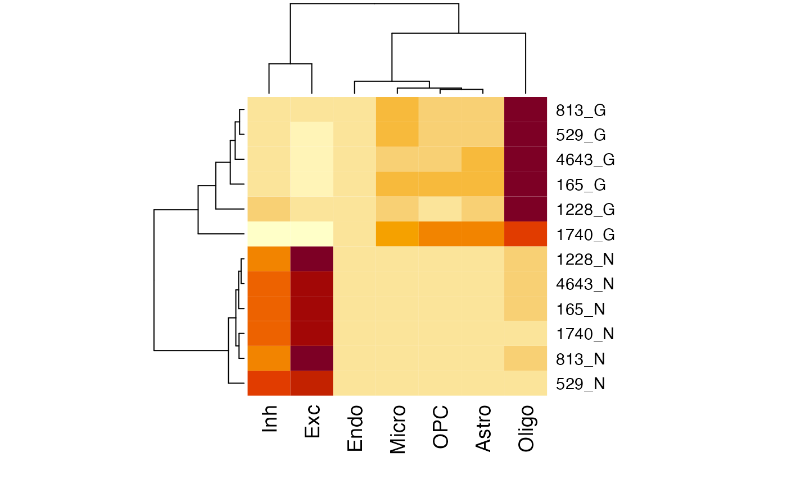

vignette.RmdYou can install the most recent updates of scMD from github with:
# install devtools if necessary
if (!"devtools" %in% rownames(installed.packages())) {
install.packages('devtools')
}
# install the MuSiC package
if (!"scMD" %in% rownames(installed.packages())) {
devtools::install_github('randel/scMD')
}
# load
library(scMD)
#> Registered S3 methods overwritten by 'registry':
#> method from
#> print.registry_field proxy
#> print.registry_entry proxy
#> Setting options('download.file.method.GEOquery'='auto')
#> Setting options('GEOquery.inmemory.gpl'=FALSE)
library(ggpubr)
#> Loading required package: ggplot2
library(reshape2)We’ve made available pre-processed scMD signatures in CSV format for your convenience. You’re welcome to download and use them directly.
If you have your own bulk data for brain tissues and want to apply scMD directly, follow the instructions below to estimate cell type proportions. Please be aware that our estimations focus on seven primary brain cell types: Astrocytes, Endothelial Cells, Excitatory Neurons, Inhibitory Neurons, Microglia, Oligodendrocytes, and OPC.
In this section, we’ll work with a selected subset of the DNAm data from Guintivano et al. as a demonstration. The full Guintivano DNAm dataset is accessible through the Bioconductor package FlowSorted.DLPFC.450k. Our provided subset comprises 12 samples from this data. When utilizing the data, you simply need to specify the technical platform of the bulk data as either “450k_or_850k” or “WGBS”.
# Estimate cell type proportions
data("Guintivano")
Est.prop.scMD = scMD(bulk = Guintivano_bulk_sub, bulk_type = "450k_or_850k")
#> Warning: package 'S4Vectors' was built under R version 4.2.2
#> Warning: package 'GenomeInfoDb' was built under R version 4.2.2
# Estimate when you have your own scDNAm data
#Est.prop.scMD = scMD(bulk = test_bulk, bulk_type = NULL,dat = beta_mtx,DM_df = df)
Get_frac <- function(cell_frac,true_frac){
tmp <- as.data.frame(cell_frac)
tmp$NeuN_pos <- tmp$Exc +tmp$Inh
tmp$NeuN_neg <- 1-(tmp$NeuN_pos)
tmp <- as.matrix(tmp[rownames(true_frac),colnames(true_frac)])
tmp <- melt(tmp)
return(tmp)
}
frac_Guint = Get_frac(Est.prop.scMD$scMD_p,true_frac = Guintivano_truefrac_sub)
tf <- reshape2::melt(Guintivano_truefrac_sub) %>%dplyr::select(true = value,everything())
frac_Guint %>% full_join(tf) %>%
mutate(CellType = ifelse(Var2 == "NeuN_pos","Neuron","Non-neuron"),
newind = paste0(true,CellType),
Samples = ifelse(newind %in% c("0Neuron","1Non-neuron"), "NeuN- samples","NeuN+ samples"),
Samples = factor(Samples, levels = c("NeuN+ samples", "NeuN- samples")),
ref = "scMD") %>% mutate(sp = paste0(Var1,true))%>% unique() %>% group_by(CellType,Samples,ref) %>% summarize(value = mean(value)) %>%
ggplot(aes(x = value, y = ref , fill = CellType)) +
geom_col() +
labs(y ="" , x="Estimated fraction",fill = "Cell Type") +ggpubr::theme_pubr()+
facet_wrap(~Samples)+ theme(legend.position="top")+ggtitle("Guintivano" )+scale_fill_manual(values=c("Non-neuron" = "#8491B4B2",
"Neuron" = "#71D0F5FF"))
#> Joining with `by = join_by(Var1, Var2)`
#> `summarise()` has grouped output by 'CellType', 'Samples'. You can override
#> using the `.groups` argument.